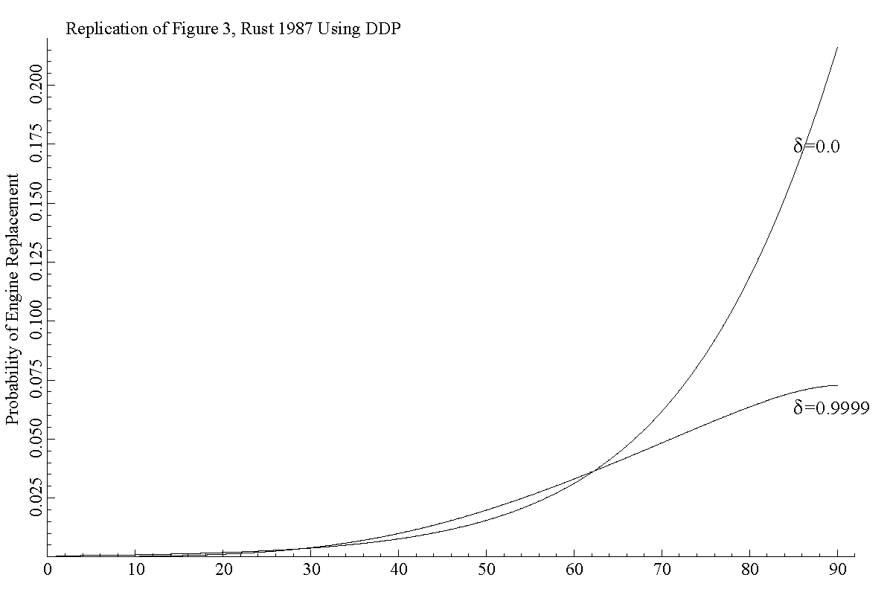
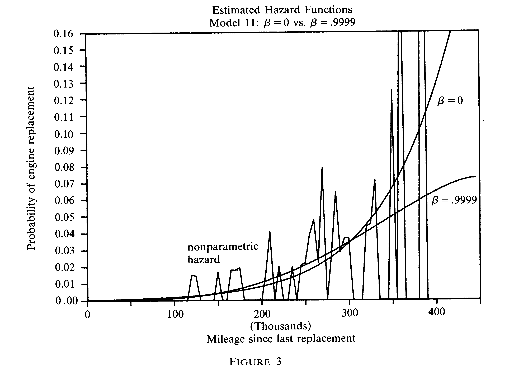

The program produces engine replacement probabilities that match those shown in Figure 3 on page 1025 of the paper. The code segments are not exactly the same as in the Ox file, which includes additional code beyond the basics shown here.
The paper models the decision to replace a bus engine as a function of mileage and unobserved IID shocks. Replacement is a one-time cost that resets the odometer to x=0. The cost of monthly maintenance increases linearly with x.
See RustEmet1987mle to see estimation using data as in the original paper.
If x = 88 or 89 then the increment probabilities changed accordingly.
Semi-Endogenous: none
Endogenous: none
Utility:
The cost of regular maintenance or engine replacement.
U = -[ dRC + (1-d)θ1mx ] + n + zd (5.1) p. 1015
zd is the standard IID extreme value shock. (In the paper it is denoted ε)
Parameters:
Parameter
Row 1
Row 2
δ
0.9999;
0
RC
10.07
7.6538
θ1
2.293
71.5133
θ3
< 0.3919,0.5953>
< 0.3919,.5953>
The article suggests x enters the code in terms of thousands of miles (0 to 445,000), but I
was not able to replicate results based on that. I was able to replicate replacement probabilities only when x
takes on values between 0 and 89.
RC is the bus engine replacement cost. θ1 is the operating cost given
mileage x. The parameter m=0.001 is a scaling factor, which appears to rescale odometer
readings. However, results were replicated when x is the bin number (0 to 89) not the odometer category.
Normalization
The paper refers to a normalization when displaying V() (see Figure 2, p. 1025). The normalization is not
explained, but my calculations seem to explain why it is necessary. The closed form extreme-value value function
iteration involves taking exponents of negative values (operating costs). When δ=0.9999 and n=0
above the result is numerical overflow in exp() With n>0 set properly the arguments are
kept closer to 0. In the replication the normalization n is set to the maintenance cost for
x=89/2, the median mileage category.
code>Rust class embeds an infinite horizon clock and a single binary action (d). It defines constants and declares a static member x>. Zurcher then declares the required method Utility().
Utility must have that name and cannot be static.
The form of the expression returned as the value should look related to the mathematical expression U() above. The parameters are static members of the class (they are the shared by each state θ). The current value of x is accessed as CV(x). The value of x is set to be the correct value at θ before Utility() is called.
Utility must return a column vector of values corresponding to the feasible action vector A[Aind]. In this case the action variable is simply d, and engine replacement is always feasible.
In mathematical notation, we would write the choice set as \(\alpha \in A(\theta)\). Rather than accessing that directly, the column of values for d is accessed using CV(d). This makes the code closer to the notation and more general since it will work even if other actions are added to the model.
The tasks required to set up and solve the model are in Zurcher::Run(). Like Run(), a user's program must do these tasks in order:
Call Initialize(new Zurcher()) for the parent DDP class. Since Zurcher is of type Rust, the program is calling Rust::Initialize(), which will set the clock and add the binary action variable to the model, d.
Create state variables (using the new operator) and add them to the model.
Call CreateSpaces();.
The state variable x is of type Renewal, which captures the process in Rust (1987) but is more general than in the empirical specification.
To properly capture the transition it must be coordinated with the choice variable d. To do this d is passed to new Renewal() as an argument, along with how many categories x takes on and the vector of increment
probabilities. The length of the vector determines how different states are feasible next period. In the empirical work, 3 of 90 odometer readings are feasible next period.
Once CreateSpaces() has been called new actions and new state variables cannot be added to the model because the state spaces have be set up already.
To solve the model the following steps are carried out
Set the discount factor δ. (This can be done at any time after Initialize() before solving the model with that δ.)
Create a new instance of a solution Method, such as value function iteration.
Call Solve() for the solution method to compute \(V(\theta)\) and \(P^\star(\alpha|\theta)\).
Use the results, then if necessary change some settings or parameters and solve again.
The code inside the for() loop solves the model twice, for Row 1 and Row 2 parameters.
For each set of parameters the value function is solved through Bellman iteration by Emax->Solve(). It calls the Output() routine to capture results to be printed and compared with Figure 3 in the paper.
The values of EV do not match those shown in Figure 2 of the paper. This is due to Rust using a different normalization than the value used here. However, the choice probabilities appear to match very well those shown if Figure 3, as the image below suggests.
Comparison to Figure 3

The paper labels the x axis as thousands of miles since engine replacement. This means that x should take on values 0, 5, ..., 445. It also suggests that the factor on costs scales 300,000 to 300. However, using this scaling I was not able to replicate the choice probabilities. Only when x takes on values 0, ..., 89 and the scaling factor still equals 0.001 was I able to reproduce the choice probabilities.
Another use of the model is to simulate data by creating a Panel object and simulating a sample of data from the process.
The call to Panel::Simulate creates a data set of 10 buses observed over 400 months each. The initial mileage for each bus will be drawn from the ergodic distribution.
The output file shows a simulated panel of buses, including the months and mileage at every replacement. The simulate routine returns a panel of observations.
But in the case of this model it is sufficient to show only months when an engine is replaced, the age of the bus when it occurs and the mileage reading. So the replication program deletes simulated months when no replacement occurred. It also appends the row number for the model.
For example, the first simulated bus data looks like this
Simulated data
Simulated data
Fxed path t n T Aj| s11 s21 x t t' r f |ai| a
0 0 92 50 0 0 0 0 50 0 0 0 0 1 1
0 0 164 44 0 0 0 0 44 0 0 0 0 1 1
0 0 248 53 0 0 0 0 53 0 0 0 0 1 1
0 0 344 69 0 0 0 0 69 0 0 0 0 1 1
Bus 0 had four replacements, which occurred in months 92, 164, 248 and 344 of its lifetime. The mileage on the odometer at replacement was in the interval [5000x,5000(x+1)].
The column labeled Const is a placeholder for exogenous state variables.
If the model has no such variables then DDP inserts a constant there. This makes it possible to construct indices into the state space without requiring a check of zero dimensions.
Since the model is stationary there is no separate time variable. If this were a finite horizon or non-stationary environment then t would contain the age of the process.
DDP allows for random aging so t would not necessarily be equivalent to the months column.
The t' variable (t″ in the notes) is used during iteration on the value function. During simulation it is not used and would always have the value 0.